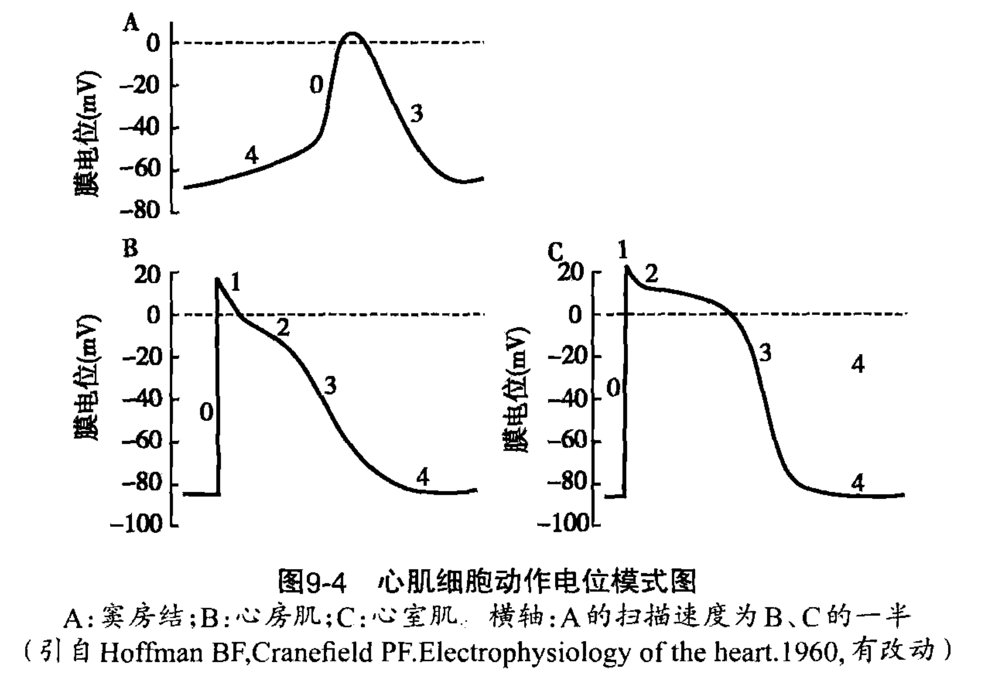
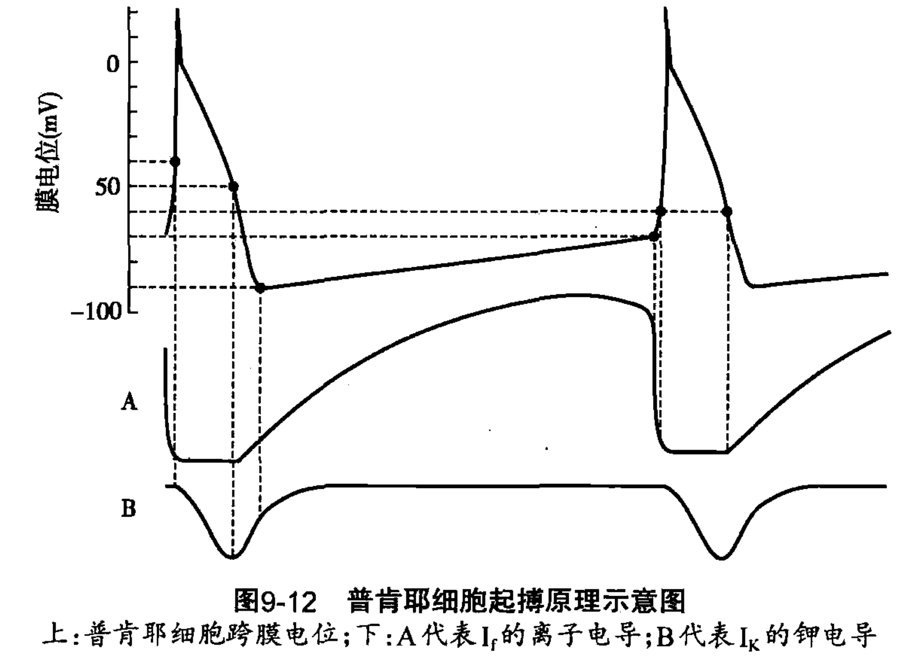
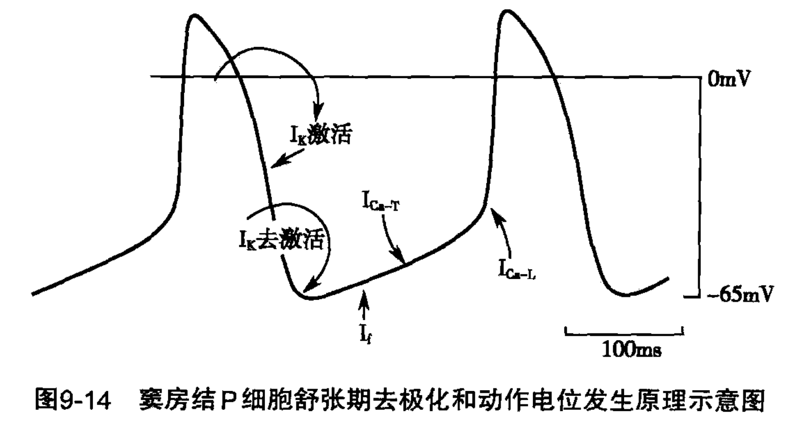

心肌细胞(cardiomyocyte)构成了心脏肌肉. 根据细胞的自发节律性, 简称自律性(automaticity), 和电生理学反应快慢, 心肌细胞可以分为三类:
快反应自律细胞(fast response autorhythmic cell)
慢反应自律细胞(slow response autorhythmic cell)
快反应非自律细胞(fast response non-autorhythmic cell)
其中快反应自律细胞又称为浦肯野细胞(Purkinje cell), 构成了浦肯野纤维(Purkinje fibers), 慢反应自律细胞构成了窦房结、房室交界和心脏传导束(结间束、房间束、房室束、左右束支). 上述两类自律心肌细胞共同构成了心脏特殊传导系统(cardiac specific conduction system). 快反应非自律细胞, 又称为工作心肌细胞(working cardiomyocyte), 构成了工作心肌.
快反应细胞的动作电位去极化机制和常规神经细胞的去极化机制保持一致, 由钠通道开放引起的\(\ce{Na+}\)内流触发; 而慢反应细胞的动作电位去极化由钙通道开放引起的\(\ce{Ca^2+}\)内流触发. 这两类去极化的速率的不同导致了两类细胞反应速率的差异.
正常情况下, 窦房结细胞的自发节律性放电频率最高, 在其他自律性细胞按照自己的频率自发放电之前, 窦房结细胞的电活动就已经扩散到这细胞并引起它们的活动. 因此, 窦房结石正常心脏搏动的起搏点(cardiac pacemaker), 正常情况下, 它的节律性放电决定了心脏搏动的频率.
和神经细胞中的静息电位构成类似, 工作心肌细胞的静息电位构成成分包括
与一般神经细胞不同的是, 心肌细胞中的非电压门控\(\ce{K+}\)通道是特殊的内向整流钾通道1 (\(\rm{I_{K1}}\)通道), 它所形成的电流称为内向整流钾离子电流(inward rectifier \(\ce{K+}\) current, Kir current, \(\rm{I_{K1}}\)), 虽然该通道没有门控, 但其开放程度受到膜电位的影响, 随着膜电位的去极化, 事实上\(\ce{K+}\)外流的速率并没有随着去极化程度的上升而增加, 这意味着去极化实际上会导致\(\rm{I_{K1}}\)通道对\(\ce{K+}\)的通透性降低, 导致\(\ce{K+}\)外流量减少. 当膜电位去极化到\(-20\rm{mV}\)以上时, \(\rm{I_{K1}}\)通道对\(\ce{K+}\)的通透性几乎为零. 这一通透性因去极化而降低, 导致电压-电流曲线向下弯曲的现象称为内向整流(inward rectifier). 整流概念的含义可以参见电学的相关内容.
\(\rm{I_{K1}}\)通道的内向整流特性并非门控机制, 而是由于去极化时细胞内的\(\ce{Mg^2+}\)和多胺移向\(\rm{I_{K1}}\)通道内口, 导致通道堵塞, 导致\(\ce{K+}\)无法外流.2
除此之外, \(\ce{Na+-Ca^2+}\)交换体也对心肌细胞中静息电位的形成有一定贡献.
\(\rm{I_{K1}}\)以外的三种电流成分在正常生理情况下不起主要作用，但在病理情况下可能取得静息电位形成的控制权.
相对于心室肌而言, 心房肌的\(\ce{I_{K1}}\)通道密度较低, 并且受钠背景电流影响较大, 因而静息电位负值较小. (心室肌约\(-90\rm{mV}\), 而心房肌约\(-80\rm{mV}\)). 此外, 由于心房肌的乙酰胆碱依赖性钾通道\(\rm{I_{K-ACh}}\)密度比心室肌细胞高5-6倍, 因而易受迷走神经释放乙酰胆碱的影响, 乙酰胆碱使得\(\rm{I_{K-ACh}}\)开放, 导致细胞电位向\(\ce{K+}\)的平衡电位移动, 即超极化. 由于受到神经递质的灵敏调控, 心房肌细胞的静息电位更容易产生波动.
和一般骨骼肌不同的是, 心肌细胞不会发生强直收缩, 这是由于工作心肌细胞的动作电位具有较长的平台期和有效不应期. 心室肌细胞的动作电位大致可以分为以下五个阶段
心房肌相对于心室肌而言, Ito离子流较大, 且有更多种类的钾通道, 因而平台期不明显, 动作电位时程较短, 动作电位图像大致呈三角形.
【最大舒张电位】没有稳定的静息电位, 达到最大舒张电位后自动去极化; 其复极化达到最大状态时的电位称为最大舒张电位, 可以看作是其静息电位. 形成原理基本也是\(\ce{K+}\)平衡电位.
【起搏原理】
【动作电位】形成机制与快反应非自律细胞类似, 但其去极化速度快且动作电位时程长. 阶段划分类似于动作电位.
【最大舒张电位】由于膜上的\(\ce{I_{K1}}\)通道分布密度低, 最大舒张电位负值较快反应自律细胞小.
【起搏原理】P细胞的起搏机制相对复杂, 至今没有完全阐明, 目前的理论观点认为与IK、If和ICa-T三种离子流有关, 以下详述:
①IK通道逐渐关闭, IK的衰减导致内向电流(If和ICa-T)占主导地位, 促进去极化的形成. 由于IK通道的关闭位点对于P细胞来说落在了最大舒张电位处(这是由于P细胞的最大舒张电位负值较快普肯野纤维小), 因此作用远大于在普肯野纤维中的作用, 有学者认为这是引起P细胞自动去极化最重要的离子流; ②If通道和ICa-T通道的开放则直接提供了自动去极化的内向电流, 注意由于If通道的电生理学特性是极化程度越高则激活水平越高, 所以If在P细胞中的作用比在普肯野纤维中的作用小.
【动作电位】由于膜上的快钠通道(INa通道)表达水平低, 且在阈电位水平上大多处于失活状态, 因此0期去极化主要依赖于ICa-L通道开放所引起的Ca2+内流, 所以去极化速率慢, 传导速率慢, 没有平台期, 因此也就没有类似两类快反应细胞的阶段划分系统, (如果强行要划分的话可以认为)直接从0期进入到了3期.3
小结:
快反应细胞的动作电位形成机制是一致的, 即由\(\ce{Na+}\)的内流引起, 去极化速率较快, 复极化过程有阶段划分; 而慢反应(自律)细胞则是由Ca2+内流引起, 去极化速率慢, 复极化过程没有阶段划分.